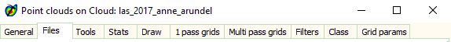
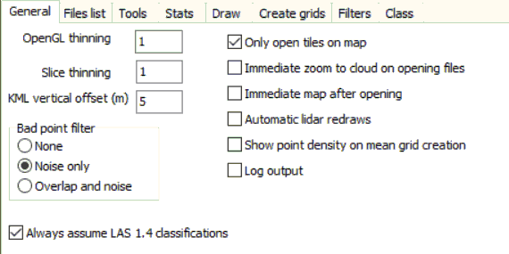
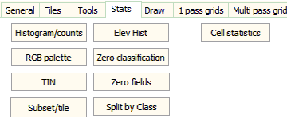

|

 |
Tabs provided detailed option selection:
Main controls on the bottom of the form, always visible.
|
|
 |
General tab
- Thinning for OpenGL, and slices
- KML vertical offset, to put the points above the landscape/ground for KML exports.
- Bad point filter: if this is set, you can ignore
points classified
as noise, and points classified as overlay.
- Assume LAS 1.4 for data sets using an older version of the LAS
specs, but including the newer classification categories, which is
relatively common
- Open only tiles on map. If you make the map larger, no new
tiles will be added.
- Immediate zoom to cloud on opening files: zoom the map to only
include area with lidar data
- Immediate map after opening: turn off if you have very large
point clouds that will draw slowly, and you want to subset first,
but keep flexibility to choose a larger or different map area later
- Automatic lidar redraws: turn off for a very large point cloud
- Show point density on mean grid creation
- Log output
- Use geographic coordindates for slices (for instance to compare
global DEMs with the lidar)
|
|
 |
Stats tab:
- Histograms/Counts: histograms for elevation and
intensity, and a count of the returns in each category,
and by return number.
- Zero classification: merge all LAS
files in the current files listing into a single file,
with the classifications all reset to zero.
- RGB Palette:
- Split by class: create new files by classification
(vegetation, buildings, ground, non_ground,
unclassified, and other)
- Recenter files: recenter all coordinates so that
multiple files share the same values. This is
designed for use with Cloud
Compare, and not at this time to create usable LAS
files for further analysis.
- Subset/tile: recursively quarter files until all
file sizes are under a specified value;
- Zero fields : set the following fields to zero:
Intensity, ReturnFlags, ScanAngle, UserData,
PointSourceID
- Cell statistics: compute elevation statistics for
every cell in the DEM on which the point cloud is
displayed
- Recompute: recreate the index files for the lidar
directories (all those currently selected). Should
only be necessarily if the index becomes corrupted, or
you add new files to the directory.
|